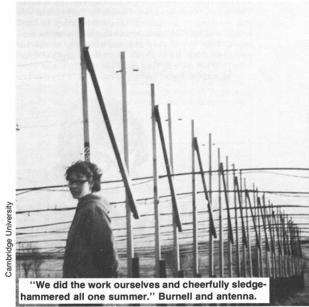
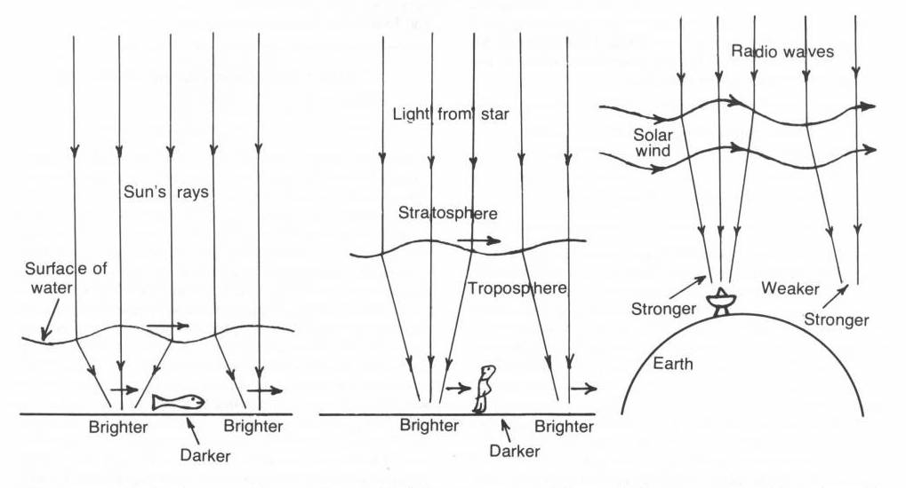
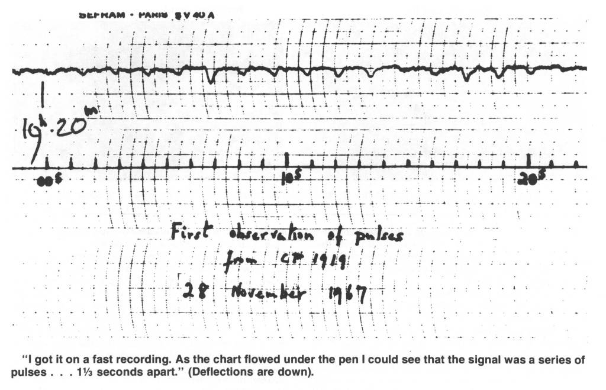
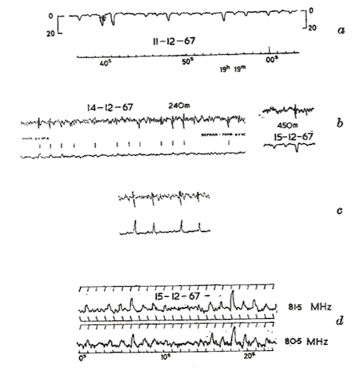
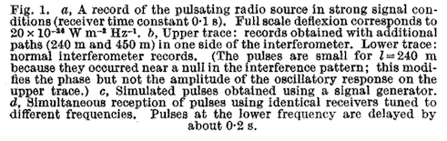
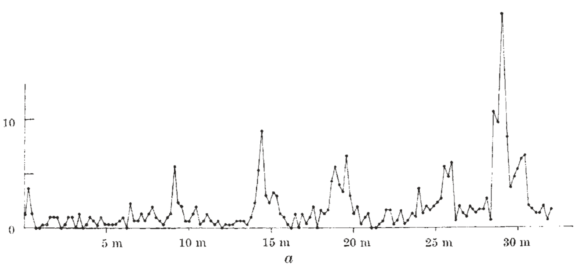
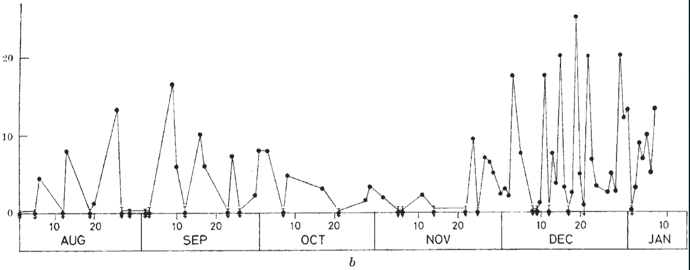
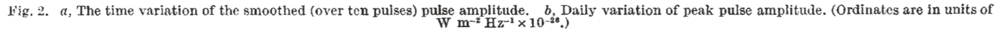
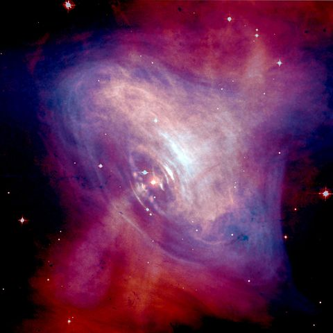

Observations of a Rapidly Pulsating Radio Source
A. Hewish, J. Bell (now Bell Burnell), et al

What they were looking for:
Quasars.
How?
Interplanetary scintillations
How this works:

Image credit: Little Green Men, White Dwarfs or Pulsars? Jocelyn Bell Burnell
In July, 1967…
- The radio survey began
- Bell discovered weak, periodic radio signals in the data
- Signals were initially believed to be interference
- However, signals were localized to a fixed position on the sky
- In November, investigations began to understand the signals’ cause
What did they look like?

What properties did they have?
- Periodic
- Time variation in amplitude
- Dispersed
Periodicity and Dispersion


Estimates of periodicity
- Observed period of
\(1.33733 \pm 0.00001\)
- Done with 6 hour time window
- Using measurements taken over a months and correcting for Earth’s motion, get
\(1.3372795 \pm 0.0000020\)
Variations in Amplitude



Why does it vary?
- Planetary scintillation could contribute
- but not sufficient to explain short-timescale (minutes) variation
- No clear correlations or systematic variations
Nature of the Source
- Aliens???
- while Bell and Hewish considered it, they abandoned this idea after more than one source observed far apart in the sky
- No parallax greater than 2 arcmin
- source at distance of at least
\(10^3\)
AU
- energy at least
\(10^{17}\)
ergs (assuming isotropic source)
- source at distance of at least
\(10^3\)
Nature of the Source
- From bandwidth and dispersion, can constrain the pulse time and thus the source size
- get 4800 km as maximum size
- Get upper limit on distance to source from dispersion
- 65 pc
Summing it up
- Local objects (galactic)
- Energetic
- Compact
- Localized tightly in right ascension, but not in declination
- Made optical follow-ups difficult
Speculation in this paper
- Regularity of the period suggests entire object involved, not just fluctuation of a feature
- (e.g. disturbance in stellar atmosphere)
- Bell and Hewish suggest radial pulsation of compact stars (due to work by Meltzer and Thorne)
- White dwarf periods pose problems (fundamental mode too low in frequency), neutron stars are compatible
What followed Hewish, Bell, et al
- Many detections followed
- Thorne and Ipser (1968) argue against radial pulsation of neutron stars, argue for white dwarfs
- Gold publishes paper barely longer than a page, detailing model of rotating neutron star
- emission via relativistic rotating magnetic plasma
Rotating Neutron Stars
Crab pulsar discovered optically, period too small for other proposed mechanisms

Image credit NASA/CXC/ASU/J. Hester et al
Original crab pulsar sources detected by Staelin and Reifenstein (1968)
Richard Lovelace and collaborators localized these sources using Arecibo.
The 1974 Nobel Prize
- Awarded to Antony Hewish and Martin Ryle; to Hewish for the discovery of pulsars.
- Bell not mentioned
Why not?
The 1974 Nobel Prize
”… it is the supervisor who has the final responsibility for the success or failure of the project… Thirdly, I believe it would demean Nobel Prizes if they were awarded to research students, except in very exceptional cases, and I do not believe this is one of them. Finally, I am not myself upset about it — after all, I am in good company, am I not!” - Jocelyn Bell, 1977
The 1974 Nobel Prize
On the other hand…
- Bell helped in the construction of the array for two years.
- Once seeing the anomalous signal, she spent a month reading 96 feet of paper recordings a day.
- She had to argue with Hewish that the signal was not mere interference.
One source recounting some of Bell’s words on this
Just Last Year
Bell Burnell was awarded a Breakthrough Prize, the largest monetary science prizes in the world.
Thank you for listening